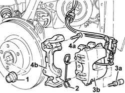
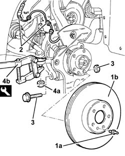
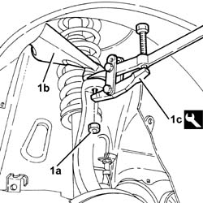
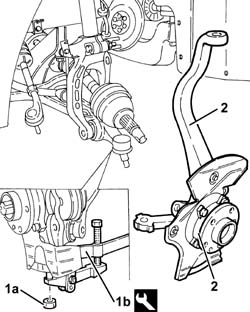
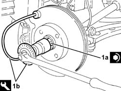
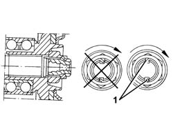

4450C10 front pillar (one), l/h or r/h complete with wheel hub - r+r with wheel removed - check wheel geometry separately
- Path
- Procedures > 44 SUSPENSION AND WHEELS > 4450 WHEELS AND HUBS > 4450C front wheel hubs > 4450C10 front pillar (one), l/h or r/h complete with wheel hub - r+r with wheel removed - check wheel geometry separately
- Kind
- repair procedure (removal / refitting; the operation number is the code)
- Applies to
- all engines; all production periods
- Interactive page
- https://sloeber94.github.io/elrnDB-a156/en/#/3238230
Applies to: all engines; all production periods
 Removing
Removing
 Refitting
Refitting1. Remove the bevel and undo the nut fixing the driveshaft to the wheel hub.
Remove the brake fluid pipe from the mounting bracket.
2. Remove the spring for the front brake caliper.
3. Undo the bolts (3a) and move the brake caliper (3b).
4. Undo the bolts (4a) and remove the brake caliper bracket (4b).

Applies to: all engines; all production periods
1. Undo the pin (1a) and remove the brake disc (1b).
2. Disconnect the electrical connection for the active A.B.S. sensor and release the electrical cable from the bands.
3. Undo the bolt securing the lower fork to the lower track control arm.
4. Undo the nut (4a) and disconnect the power steering box from from the steering knuckle using the tool (4b).
 | Name | Country |
|---|---|---|
4b | Extractor | 1.821.169.000 |

Applies to: all engines; all production periods
1. Undo nut (1a) and disconnect upper wishbone (1b) from the wheel strut using tool (1c).
| Name | Country |
|---|---|---|
1c | Extractor | 1.821.169.000 |

Applies to: all engines; all production periods
1. Undo the nut (1a) and disconnect the lower track control arm from the steering knuckle using the tool (1b).
| Name | Country |
|---|---|---|
1b | Extractor | 1.821.169.000 |
2. Remove the front steering knuckle complete with wheel hub.

Applies to: all engines; all production periods
Refitting
RemovingFit the front steering knuckle, complete with wheel hub, and secure it to the track control arm and fasten it tightening the nut to torque.
 | Fastening | Component | Ø | Value (daNm) |
|---|---|---|---|---|
- | Nut | FRONT SUSPENSION LOWER LEVER | M14 | 8.6 - 9.5 |
Connect the upper wishbone to the wheel strut and secure by tightening the nut to the specified torque.
| Fastening | Component | Ø | Value (daNm) |
|---|---|---|---|---|
- | Nut | FRONT SUSPENSION TOP LEVER | M10 | 4.3 - 4.7 |
Connect the power steering box rod to the steering knuckle and secure it tightening the nut to torque.
| Fastening | Component | Ø | Value (daNm) |
|---|---|---|---|---|
- | Nut | ADJUSTABLE STEERING LINKS | M14 | 2.9 - 3.6 |
Tighten the bolt securing the lower fork to the lower track control arm to torque.
| Fastening | Component | Ø | Value (daNm) |
|---|---|---|---|---|
- | Bolt | FRONT DAMPER FORK ON WISHBONE | M12 | (Lower track control arm side) 10.8 ÷ 13.2 |
Connect the electrical connection for the active A.B.S. sensor and secure the electrical wiring to the bands.
Fit the brake disc and secure it tightening the pin to torque.
| Fastening | Component | Ø | Value (daNm) |
|---|---|---|---|---|
- | Pin | FRONT BRAKE DISC. | M8 | 0.8 - 1.3 |
Fit the brake caliper bracket and fix it using the bolts.
Place the brake caliper back in its housing and secure it to the bracket tightening the bolts to torque.
| Fastening | Component | Ø | Value (daNm) |
|---|---|---|---|---|
- | Pin | FRONT BRAKE CALIPER ASSEMBLY | M8 | 10.9 - 12.1 |
Fit the spring for the front brake caliper.
Fix the brake fluid pipe to the mounting bracket.
1. Tighten the nut (1a) for the driveshaft to the wheel hub to the recommended torque using the tool (1b) for angular tightening.
| Fastening | Component | Ø | Value (daNm) |
|---|---|---|---|---|
1a | Nut | FRONT DRIVE SHAFT COMPLETE WITH JOINTS | M24 | (Wheel hub side) 6.7 - 7.4 + 62° |
| Name | Country |
|---|---|---|
1b | Protractor | 1.820.622.000 |

Applies to: all engines; all production periods
1. Using a chisel, stake the nut collar twice, as illustrated.

Topics that link to this page (5)
- 3010A59 front brake disc guard - r r
- 4410B40 lower wishbone (with balljoint) of left or right front suspension (one) - r+r -check wheel geometry separately
- 4450C14 front pillars (two) complete with wheel hub - r+r with wheels removed - check wheel geometry separately
- 4450C32 one front wheel hub bearing, lh or rh - replace
- 4450C38 front wheel hub bearings (lh and rh) - replace